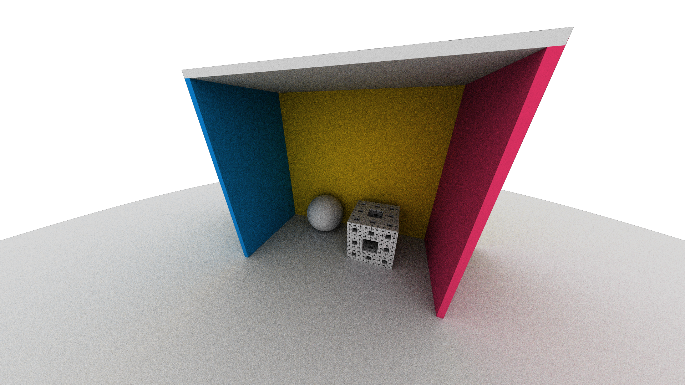
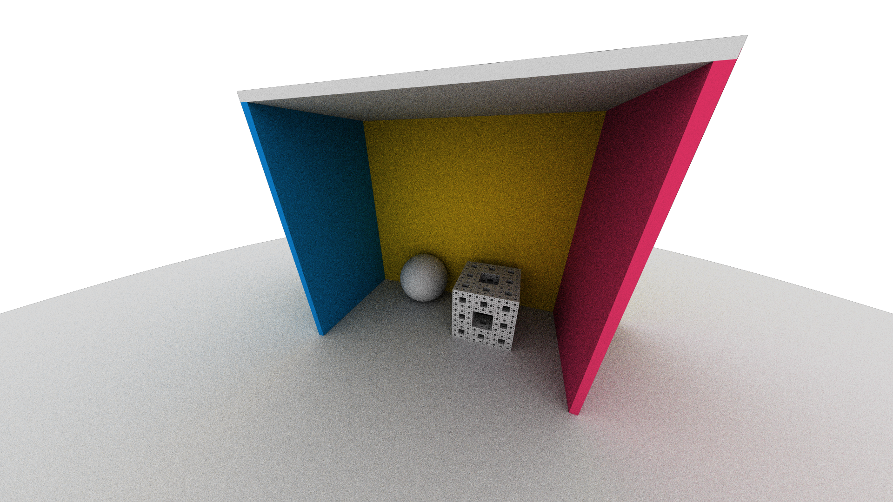

Results

.gif)
See more in the results section below.
Title: GeoSim
Summary: We build a hardware-accelerated ray-marcher capable of handling real-time rendering in non-euclidian geometries. In the process we developed understanding of ray marching, the mathematics of non-euclidean geometry, the CUDA programming model, and basic hardware-acceleration programming principles.
Team Members:
We want to visualize non-euclidean geometry with photorealistic accuracy.

See more in the results section below.
The project codebase revolves around CUDA. The executable is set up to run on CSUA virtual machines, with NVIDIA Tesla V100 compute. We use the nvcc compiler to generate binrary, and CMake to manage dependencies.
We use C++ libraries to streamline the process, including:
Compute Unified Device Architecture(CUDA) is a parallel computing interface that allows non-serial algorithms to be off-loaded onto GPUs. We found CUDA to be particularly helpful, as the non-euclidian ray-marching algorithm can be executed in parallel: pixel values do not depend on each other.
When offloading work to GPU, we initialize a CUDA kernel, which is executed by many threads in parallel. The threads are then organized into blocks, within which the threads synchronize and communicate through shared GPU memory. This model allows for massive parallelism. In our implementation, we initialize a fixed size of CUDA blocks, each block containing a fixed size of CUDA threads. Each thread is responsible for the rendering algorithm of one pixel. We index the workers threads in a two-dimensional array, where we intuitively assign pixel coordinates to each thread, and dispatch the rendering work.
The key idea at hand is simple. Assuming familiarity with raytracing, in which scenes are represented explicitly and ray-geometry intersections can be solved for analytically, ray marching is the implicit and approximate counterpart. Instead of solving an equation to find the intersection of a ray and a primitive like in raytracing, ray marching represents its primitive with signed distance functions (SDFs) which measure the signed distance between a point. By taking the signed distance between our primitive and our ray origin, we can measure how much closer we can move or "march/step" in the direction of the ray before intersecting. We can repeat this routine until one of two conditions is met: we've reached an arbitrarily close distance from our primitive and can approximate the ray's intersection with it, or we have taken an arbitrary number of steps without reaching the previous condition, thus not intersecting any primitive. This is the algorithm of ray marching, abstract and agnostic of any geometries.
In our classical renderers and day to day lives, we assume the geometric optics model of light which states that light travels along the shortest path: along rays or straight lines. This assumption enables much of raytracing. However, dropping Euclid's fifth postulate:
"if a straight line falling on two straight lines make the interior angles on the same side less than two right angles, the two straight lines, if produced indefinitely, meet on that side on which are the angles less than the two right angles."
We leave the land of euclidean geometry, and can no longer make this assumption. In non-euclidean geometries, the shortest path between two points need not be a straight line. Yet light still does travel along geodesics. This is where we must turn to ray marching as our technique for its ability to march along the geodesic path of light. That is, we use ray marching as described above to march along the geodesic path of light in our non-euclidean space.
ComputeClosestIntersection(Ray r, Scene s)
{
Integer MAX_NUM_STEPS = X
Scalar MIN_HIT_DISTANCE = EPS
Position p = r.origin
Direction d = r.direction
for i in (1, ... , MAX_NUM_STEPS)
{
Scalar distance = SDF(p, scene);
// Approximate Intersection
if (distance < MIN_HIT_DISTANCE)
return ClosestPrimitive(p, scene)
// Step
p = geodesicFlowPosition(p, d, distance)
d = geodesicFlowDirection(p, d, distance)
}
// Ray Miss
return NIL
}
One of the greatest challenges was understanding the underlying mathematics of non euclidean geometry. We began with no exposure to any formal mathematical ideas about noneuclidean geometry. Few people have made 3D visualizations of hyperbolic space and fewer have made accessible resources. We based much of our efforts off the works of Rémi Coulon, Elisabetta A. Matsumoto, Henry Segerman, Steve J. Trettel: Ray-marching Thurston geometries and Non-euclidean virtual reality I: explorations of H3. The former being a mathematically rich but dense 140+ page dissertation on how to visualize all 8 of the Thurston Geometries. The dissertation goes into much mathematical rigor, touching on primarily geometric topology and differential geometry as well as numerical analysis and differential equations. Concepts quite foreign to us took a while to understand and implement correctly. Not having an intuition for the visuals of non euclidean geometry, many unit tests were made to verify the numerical results of all our calculations. Eventually it was all mostly understood: the different models of H3, their numerical representations, numerical stabilities, computational costs, and other pros and cons; we chose the use the hyperboloid model so we needed to know how to represent and verify that a point lie on the hyperboloid, tell if a direction was in the tangent space of a point, how to flow along the geodesics of hyperbolic space, how to represent a scene in hyperbolic space. Understanding these mathematics was crucial to creating and implementing a hyperbolic ray marcher.
The first problem we encounter is compute. As a team of three, none of us had access to a CUDA-ready GPU. We obtained compute from CSUA that has NVIDIA GPUs. We also had a difficult time learning about the c++ compilation tooling on the remote machine. The remote machine has nvcc cuda compiler ready, however, setting up the compilation pipeline using CMake posed the team another challenge. Eventually, we managed to compile a simple cuda program. Directly writing code in cuda on a remote machine does not provide a "visual" feedback. Instead, we decide to prototype our H3 raymarching algorithm in an existing CPU-based custom pathtracer written by Jonathan.
Conquering the foreign abstract mathematics and then its discrete numerical representation, we needed to adapt our home made euclidean path tracer into an interactive hyperbolic raymarcher. We began by first engineering the euclidean path tracer into a euclidean ray marcher. In a few short hundred lines of code, we succeeded. The next step was to abstract and generalize the capabilities of the euclidean ray marcher to be able to march in arbitrary geometries. Through hundreds of lines of debugging tests, hundreds of lines of dedicated scripts to sanity check numerical results, rereads of the math papers, and banging our heads against the wall, we came to a result which we know to be correct. A challenge with the alienness of non-euclidean geometry is our inability to visualize it.
Through the work of our team we successfully achieved a working prototype of a software hyperbolic raymarcher and a hardware accelerated CUDA raymarcher primed for generalization of non euclidean geometries. We also got a lot of cool bug art: